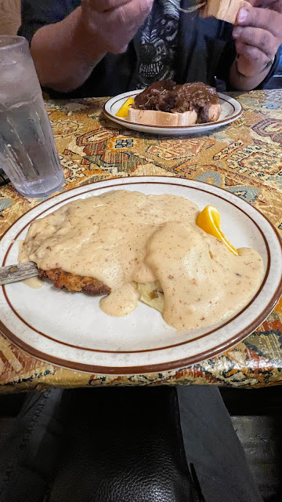
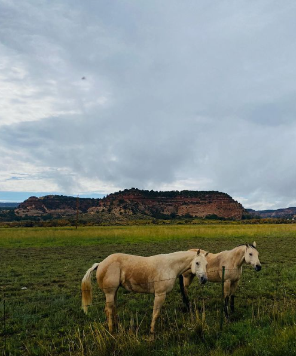

National Park
DECEMBER 12, 2023
2 mins Read
Exploring Moqui Cave + Belly of the Dragon Cave, Utah

After visiting The Valley of Fire, Zion National Park, and Bryce Canyon National Park, we decided to check out some caves near our Airbnb. We decided to skip hiking in Zion since thunderstorms were crazy that day so we explored the Moqui Cave of Ancient History as well as the Belly of the Dragon Cave in Orderville, UT. The views were amazing and it was a great family adventure full of conquering fears and heights.

We then walked down the street and went to a souvenir shop and chatted with the owner who told us that according to his Doppler app, the rain would stop and within two hours everything would be dry enough to continue our adventures. It was still raining, so we headed to Duke's Department Store to get my brother Sean something for the rain and to get myself a new bag.
We made our way to a ghost town, which consisted of dilapidated burned wooden buildings but it was still cool to see since there were horses across the street. My brother Steven took the photo below.
Overall, we had an eventful day filled with awesome cave exploration and we even got to see rain in Utah for the first time. From this trip, I now love Utah and can understand why the Rock Shop owner left northern California to move to Utah. He said that after driving through Zion National Park, he was sold and decided to leave CA 15 years ago and never looked back. He said CA is too expensive, there's too much traffic, and he was just over it. He nearly convinced us to move out as well LOL!